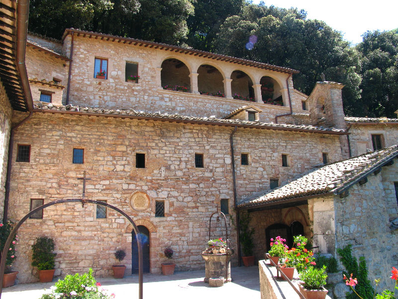

59. Eremo delle Carceri, Assisi felett
43.063100, 12.652100

Erdő és sziklák között egy ferences remeteség, nagyon erős csendélmény.
A hely a Monte Subasio erdős oldalán van, ezért a megközelítés is része az élménynek. A remeteség kis terei és a természetes barlangos környezet különleges atmoszférát ad. Nyáron a fák árnyéka miatt kellemesebb a klíma, mint a városban. Akkor működik a legjobban, ha csendesebb napszakot választotok. Ha spirituális helyeket kerestek, ez Assisi egyik legerősebb pontja.
Google Maps: https://www.google.com/maps?q=43.0631,12.6521